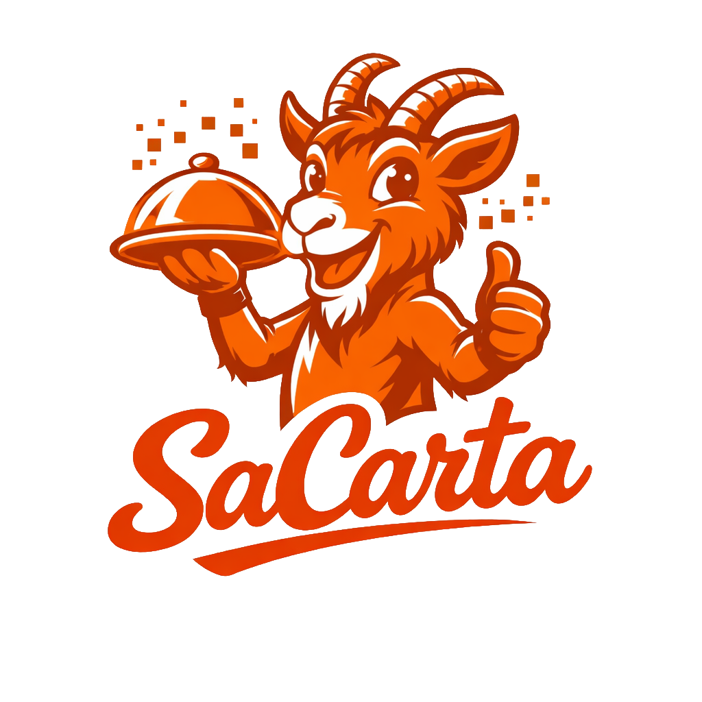
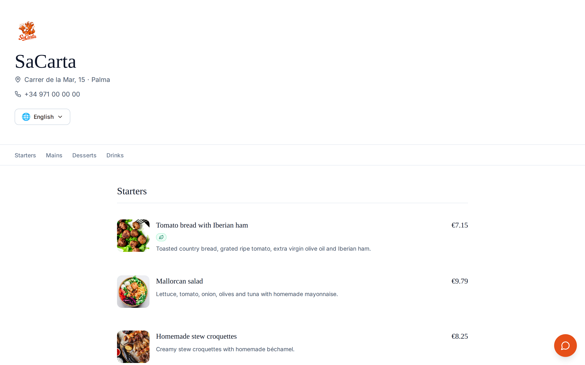
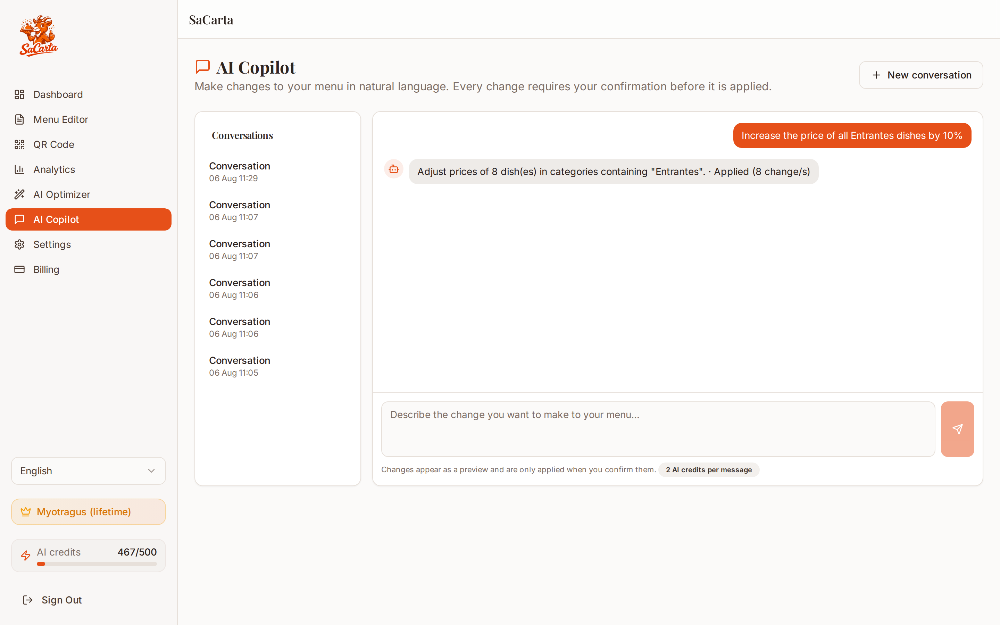
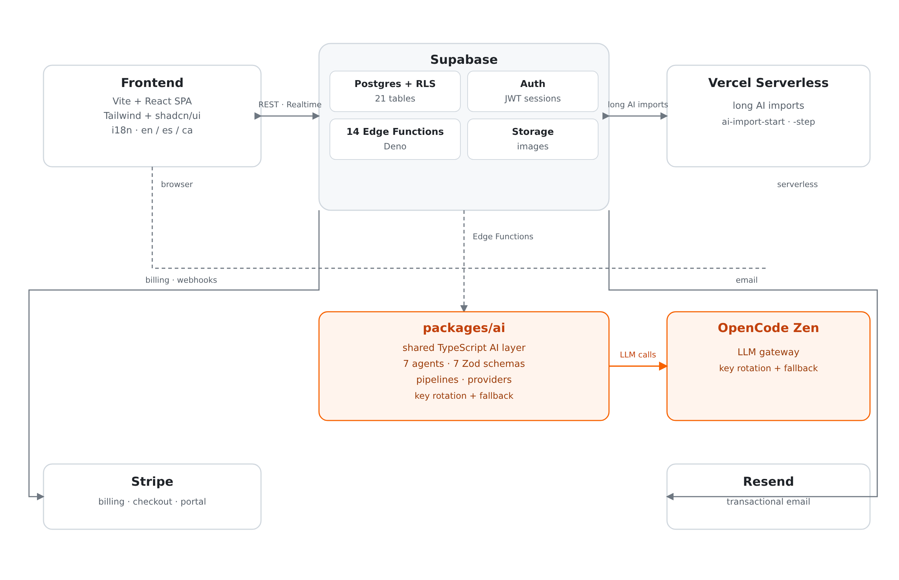
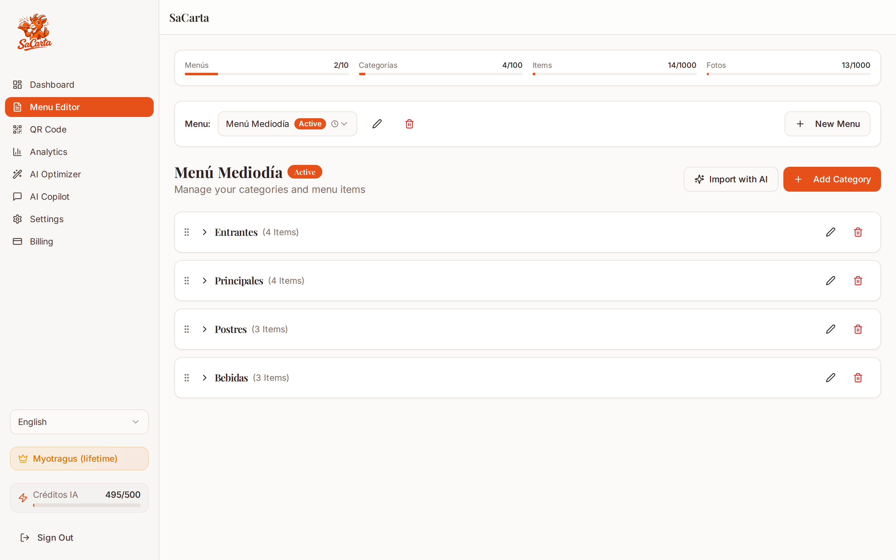
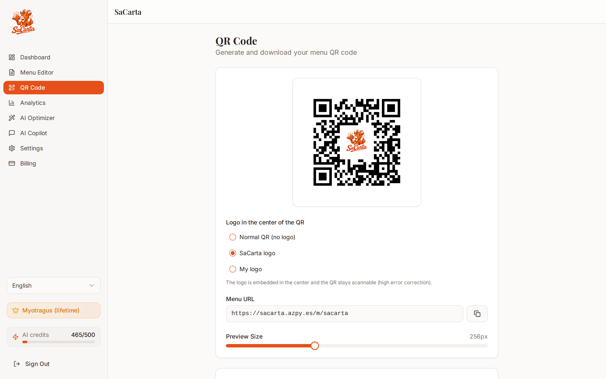
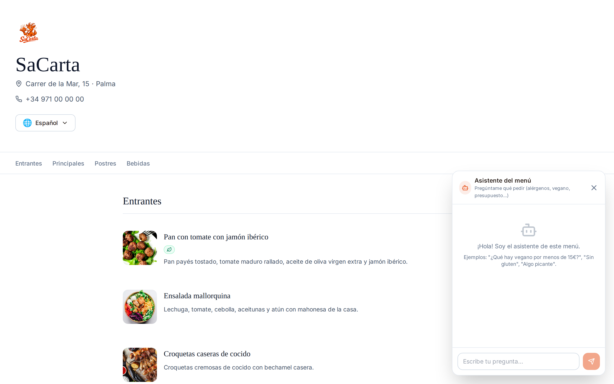
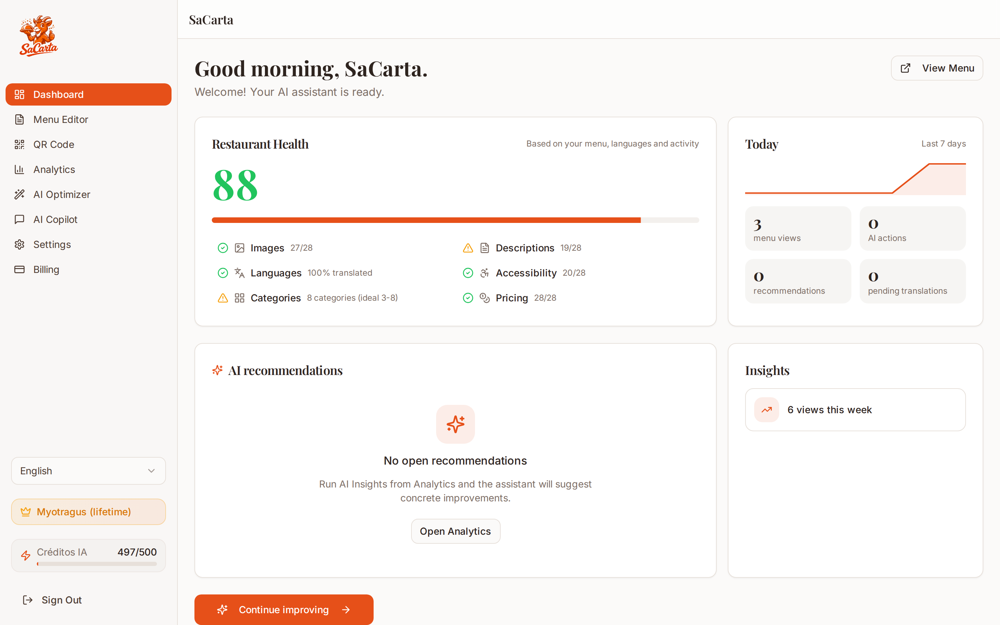
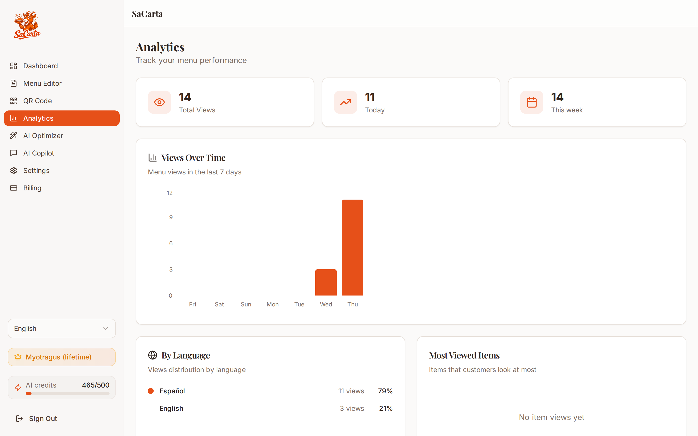

Upload
Import from a PDF or pasted text. AI builds the full structure: categories, dishes, prices, dietary flags.

The AI operating system for restaurant menus
01 · The Problem
Restaurant owners lose hours every single week just keeping their menu alive, and the result is still a static, never-translated, invisible PDF.
Every time a plate changes, a price moves, or a season ends, someone edits the menu by hand, dish by dish, category by category. The printed PDF goes stale the moment it is printed. International guests cannot read the menu, so they order less, or not at all. And the owner has no data about what actually sells, so the menu never improves: it just exists.
SaCarta was built for the hospitality industry of Mallorca: restaurants, hotels, bars, beach clubs and coffee shops, where multilingual guests are the norm and the menu is the first sales pitch a business makes.
02 · The Solution
Upload your menu once. SaCarta structures it, writes appetizing descriptions, translates it into your guests' languages, and keeps it optimized, all behind a QR code your customers scan at the table.
Import from a PDF or pasted text. AI builds the full structure: categories, dishes, prices, dietary flags.
Descriptions generated in the restaurant's voice, with style presets from luxury to casual.
Every dish translated into every supported language with culinary sensitivity, not word-for-word.
A 0–100 health score and daily recommendations tell you exactly what to improve.

03 · The AI Layer
Every AI capability lives in a single shared TypeScript package consumed by the browser and the backend alike. Nothing is bolted on per feature.
Every input and output crosses a Zod-validated boundary, so invalid data never reaches the UI. Every generation is audited: jobs, credit consumption and menu scores are persisted. The Copilot can only write through a deterministic resolver and executor after the owner confirms a preview. And the LLM gateway uses key rotation with a free-to-paid fallback chain for zero-downtime generation.

04 · Architecture
A Vite/React SPA talks to Supabase (Postgres + RLS, Auth, Storage, and 14 Deno Edge Functions) and to Vercel serverless for long-running imports. Both consume the same AI package.

packages/ai is consumed by the browser and by every Edge Function: one schema, one provider gateway, one behavior.05 · User Flow
Onboarding takes two paths: build the menu by hand, or upload it and let the AI assemble everything.



06 · Tech Stack
A deliberately mainstream stack: every layer is a widely-known technology with a real community.
React 18 + TypeScript, Vite, Tailwind CSS and shadcn/ui. i18n in en / es / ca.
Supabase Postgres: 21 tables, RLS enabled everywhere, Auth, Storage.
14 Deno Edge Functions + Vercel serverless for long-running AI imports.
packages/ai: agents, pipelines, Zod schemas, providers. Gateway: OpenCode Zen with key rotation + fallback.
Stripe subscriptions with a customer portal; webhook-driven entitlement.
Resend transactional email (welcome, contact).
Each of the 8 AI features was exercised end-to-end against the live project with a real LLM call before being considered done, including safety tests for the Customer Assistant (allergen exclusion, budget filtering) and the Copilot (price change previewed, confirmed, applied, and audited).

07 · Business Model
Three plans that pay for themselves: the AI import alone replaces hours of manual work every month.
1 menu, 1 language, 25 dishes, basic QR. Enough to try the product; the AI import is the upgrade hook.
3 menus, 2 languages, 50 dishes, schedules, advanced analytics. Monthly or annual.
Lifetime access, unlimited languages, 1000 dishes, VIP support, manual setup by the team.
Each plan includes a monthly AI credit allowance metered per generation (description, translation, import, copilot turn, insights).
08 · Future Vision
SaCarta's direction is simple: the owner should almost never create a menu item by hand again.
They provide raw material: a PDF, a photo of a printed menu, a stack of notes. SaCarta does the work a junior hire would otherwise be paid for: extracting structure, writing appetizing copy, translating with culinary sensitivity, and continuously telling the owner how to make the menu better.
SaCarta will not generate AI food photography. A photo on a real menu is a promise about what the diner will be served; a synthetic image risks deceiving them the moment the real dish arrives. Real owner-provided photos stay, untouched.

Built in Mallorca for the hospitality industry. Scan a real QR at a real table: sacarta.azpy.es